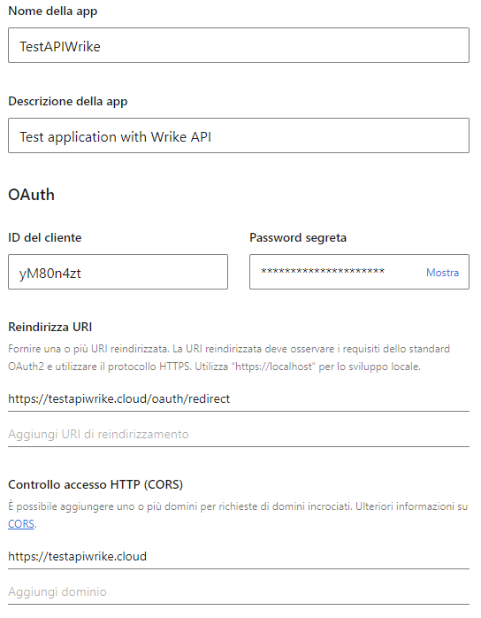
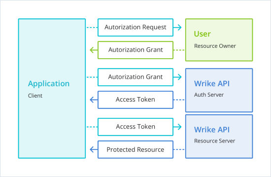
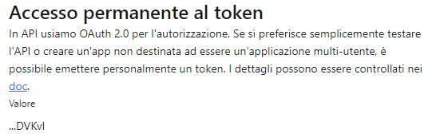

Welcome to the mine useful documentation for daily work on web developer and computer programming. Thanks to PrettyDocs for theme template layout; download it at the page linked in the button below.
Download PrettyDocsPrismJS is used as the syntax highlighter here. You can build your own version via their website should you need to.
Insert the following piece of code in Wordpress Theme functions.php file for disabling autoremove trash items (page, post, portfolio) after 30 days (default option).
function wpb_remove_schedule_delete() {
remove_action( 'wp_scheduled_delete', 'wp_scheduled_delete' );
}
add_action( 'init', 'wpb_remove_schedule_delete' );
Insert the following piece of code in Wordpress Theme functions.php file for enabling SVGs upload in Wordpress Media Library.
function add_file_types_to_uploads($file_types) {
$new_filetypes = array();
$new_filetypes['svg'] = 'image/svg+xml';
$file_types = array_merge($file_types, $new_filetypes);
return $file_types;
}
add_filter('upload_mimes', 'add_file_types_to_uploads');
WordPress shortcodes are used to reduce the amount of code you need to write and to simplify the usage of WordPress plugins, themes, and other functions. They behave like macros, when you insert a shortcode, it is replaced with a snippet of code. It could be anything.
When creating your own shortcodes, there are two things you need to do:
Although it’s not required, it’s a good idea to keep your custom shortcodes in their own file. Alternatively, you may add them to your theme’s functions.php file.
First, create a new file named custom-shortcodes.php, and save it inside the same folder as your theme’s functions.php file.
Next, open the functions.php file, and add the following line of code:
include('custom-shortcodes.php');
In this first example, we’re going to create a basic WordPress shortcode that inserts simple avatar image.
The first step is to create the shortcode function. Inside the custom-shortcodes.php file, add the following block of code:
function dotiavatar_function() {
return '<img src="http://mydomain.com/wp-content/uploads/avatar-simple.png" alt="doti-avatar" width="96" height="96" class="center-align" />';
}
In the code example above, the dotiavatar_function function returns a pre-determined image named avatar-simple.png.
The next step is to register the shortcode with WordPress using the built-in function add_shortcode. Still inside custom-shortcodes.php, add the following line of code:
add_shortcode('dotiavatar', 'dotiavatar_function');
When you register a shortcode using the add_shortcode function, you pass in the shortcode tag ($tag) and the corresponding function ($func)/hook that will execute whenever the shortcut is used.
In this case, the shortcut tag is dotiavatar and the hook is dotiavatar_function.
Note: When naming tags, use lowercase letters only, and do not use hyphens; underscores are acceptable.
Now that you have the shortcode created and registered, it’s time to try it out! Whenever you want the DOTI avatar to appear inside the post content, you can use the shortcode instead:
[dotiavatar]
In the previous example, there wasn’t much room to change things up. Let’s say, instead of pushing a single image, we’d like to be able to set which image to use using a parameter. You can do that by adding some attributes ($atts).
Once again, inside custom-shortcodes.php, add another function, like so:
function dotirating_function( $atts = array() ) {
// set up default parameters
extract(shortcode_atts( array('rating' => '5'), $atts) );
return '<img src="http://mydomain.com/wp-content/uploads/$rating-star.png" alt="doti-rating" width="130" height="188" class="center-align" />';
}
The function above accepts a single parameter: rating. If a rating value is not passed, it uses a default string value of 5. It does this by unwrapping the array of attributes using the built-in shortcode_atts function, and combining the default values with values that may have been passed into the function.
Don’t forget to register the shortcode, like above.
With the shortcode function created, and the hook added, the shortcode is now ready to be used inside your post content:
[dotirating rating=3]
By default, shortcodes are only supported in posts, pages, or custom post types; they are not supported in sidebar widgets. To add support for widgets, you need to add the following code to the functions.php file:
add_filter( 'widget_text', 'shortcode_unautop' );
add_filter( 'widget_text', 'do_shortcode' );
By default, WordPress comes with a standard set of widgets that you can use with any WordPress theme.
WordPress also allows developers to create their own custom widgets.
WordPress comes with a built-in WordPress Widget class. Each new WordPress widget extends the WordPress widget class.
we will be focusing on the following methods:
// Creating the widget
class wpb_widget extends WP_Widget {
function __construct() {
parent::__construct(
// Base ID of your widget
'wpb_widget',
// Widget name will appear in UI
__('WPBeginner Widget', 'wpb_widget_domain'),
// Widget description
array( 'description' => __( 'Sample widget based on WPBeginner Tutorial', 'wpb_widget_domain' ), )
);
}
// Creating widget front-end
public function widget( $args, $istance ) {
$title = apply_filters( 'widget_title', $istance['title'] );
// before and after widget arguments are defined by themes
echo $args['before_widget'];
if ( ! empty( $title ) )
echo $args['before_title'] . $title . $args['after_title'];
// This is where you run the code and display the output
echo __( 'Hello, World!', 'wpb_widget_domain' );
echo $args['after_widget'];
}
// Widget Backend
public function form( $instance ) {
if ( isset( $instance[ 'title' ] ) ) {
$title = $instance[ 'title' ];
}
else {
$title = __( 'New title', 'wpb_widget_domain' );
}
// Widget admin form
?>
<p>
<label for="<?php echo $this->get_field_id( 'title' ); ?>"><?php _e( 'Title:' ); ?></label> <input class="widefat" id="<?php echo $this->get_field_id( 'title' ); ?>" name="<?php echo $this->get_field_name( 'title' ); ?>" type="text" value="<?php echo esc_attr( $title ); ?>" />
</p>
<?php
}
// Updating widget replacing old instances with new
public function update( $new_instance, $old_instance ) {
$instance = array();
$instance['title'] = ( !empty( $new_instance['title'] ) ) ? strip_tags( $new_instance['title'] ) : '';
return $instance;
}
// Class wpb_widget ends here
}
// Register and load the widget
function wpb_load_widget() {
register_widget( 'wpb_widget' );
}
add_action( 'widgets_init', 'wpb_load_widget' );
After adding the code you need to head over to Appearance » Widgets page. You will notice the new WPBeginner Widget in the list of available widgets. You need to drag and drop this widget to a sidebar.
When creating your own shortcodes, there are three steps you need to follow: registering the widget area, inserting widgets, and showing the widget area on the website.
The first step to adding widget areas to your WordPress website is the registration. Every widget area must be first registered using the register_sidebar function. This requires inserting a code which is similar to the one given below inside the functions.php file of your theme.
function register_custom_widget_area() {
register_sidebar(
array(
'id' => 'new-widget-area',
'name' => esc_html__( 'My new widget area', 'theme-domain' ),
'description' => esc_html__( 'A new widget area made for testing purposes', 'theme-domain' ),
'before_widget' => '<div id="%1$s" class="widget %2$s">',
'after_widget' => '</div>',
'before_title' => '<div class="widget-title-holder"><h3 class="widget-title">',
'after_title' => '</h3></div>'
)
);
}
add_action( 'widget_init', 'register_custom_widget_area' );
After registration, the second step should be very familiar to any WordPress user. It involves dragging and dropping widgets inside the newly created widget area. To do this, navigate to Appearance » Widgets, locate the widget area you created and add the widgets you want to it.
However, even after you register the widget area and make sure it isn’t empty, it still won’t automatically show on your site. For it to appear, you need to add additional code that “calls” the specific sidebar, i.e. widget area, that you created. The code you need to insert is similar to this one:
<?php if ( is_active_sidebar( 'new-widget-area' ) ) : ?>
<div id="secondary-sidebar" class="new-widget-area">
<?php dynamic_sidebar( 'new-widget-area' ); ?>
</div>
<?php endif; ?>
The function dynamic_sidebar is the one responsible for showing the widget area. It accepts a previously registered name or id of a widget area as valid parameters. Wrapping the widget area with a div tag isn’t necessary, but we recommend it as it makes the HTML of your pages more structured.
Finally, by further wrapping the code with the is_active_sidebar conditional tag, we are making sure the widget area is only shown if it has widgets inserted.
All official and full references here.
Before you get started with OAuth 2.0 authorization, you’ll need to register and properly set up the Wrike API application. Each application is assigned a unique Client ID and Client Secret which will be used in the OAuth flow. You can find the client credentials of your application and manage other options on App Console. 

https://login.wrike.com/oauth2/authorize/v4?client_id=<client_id>&response_type=code
POST https://login.wrike.com/oauth2/token
//Parameters:
client_id=<client_id>
client_secret=<client_secret>
grant_type=authorization_code
code=<authorization_code>
curl -X GET -H "Authorization: bearer " https://www.wrike.com/api/v4/contacts?me=true
POST https://login.wrike.com/oauth2/token
//Parameters:
client_id=<client_id>
client_secret=<client_secret>
grant_type=refresh_token
refresh_token=<refresh_token>
scope=<scope>
Generally for production purposes, OAuth 2.0 is the prefered method of authorization in the Wrike API. However if you’d like to simply test the API features or create an application which is not intended to be used by multiple users, you can use an alternative approach, the permanent token.
The permanent token is a normal token that never expires: you can obtain it once and then use it as long as you want without needing to refresh or re-authenticate. This means you can build standalone integrations without any web server to support the OAuth 2.0 authorization flow.
To receive a permanent token you need to open your application on the App Console and click "Obtain token".

But be careful! The permanent token allows applications to gain access to all data in a certain Wrike account on your behalf. Keep your permanent token private and revoke it when you no longer need it.
Explore API methods to get maximum value from your Wrike integration.
Every response is in JSON format.
| HTTP CODE | ERROR | DETAILS |
|---|---|---|
| 400 | invalid_request | Request HTTP type is invalid, request critical data is absent or malformed (e.g., no attachment body) |
| 400 | invalid_parameter | Request parameter name or value is invalid |
| 400 | parameter_required | Required parameter is absent |
| 401 | not_authorized | User is not authorized (authorization is invalid, malformed or expired) |
| 403 | access_forbidden | Access to requested entity is denied for user |
| 403 | not_allowed | Requested action is not allowed due to license/quota limitations, etc. |
| 404 | resource_not_found | Requested entity is not found |
| 404 | method_not_found | Requested API method does not exist |
| 429 | too_many_requests | IP or access token exceeded limit: 100 requests per minute |
| 429 | rate_limit_exceeded | Rate limit exceeded, try again later |
| 500 | server_error | Server side error |
ALTER TABLE tablename AUTO_INCREMENT = 1
For InnoDB you cannot set the auto_increment value lower o equal to the highest current index.
The .htaccess file can be used for redirecting to web pages following particular errors; or even to protect certain folders with passord (encrypted with MD5 on Apache).
Here are some examples:
ErrorDocument 404 "path/to/page/error-404.html"
AuthType Basic
AuthName "Restricted Area"
AuthUserFile "path/to/file/.htpasswd"
Require valid-user
test:$apr1$gbx5fvw6$gcTXN.nGIYPiJt4d9Gy57.